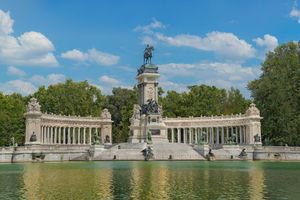
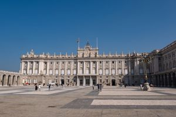
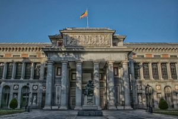
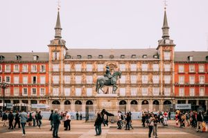
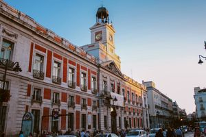
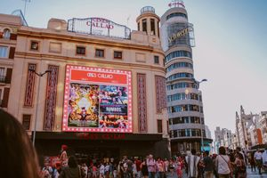
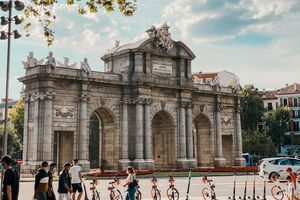
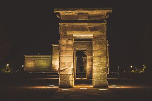

El Parque del Retiro

El Parque del Retiro es uno de los pulmones verdes más importantes
de Madrid y un destino obligado para visitantes y locales por
igual. Este hermoso espacio, que data del siglo XVII, combina
naturaleza, historia y cultura, ofreciendo un lugar ideal para
relajarse, pasear o disfrutar de actividades al aire libre. Entre
sus caminos sombreados, esculturas, jardines y monumentos, el
Retiro es un refugio perfecto del bullicio urbano donde se puede
disfrutar de un momento de tranquilidad rodeado de belleza y
tradición madrileña.
El Palacio Real

El Palacio Real de Madrid es uno de los monumentos más
emblemáticos de la capital española y una joya de la arquitectura
europea. Con su grandiosa fachada y sus impresionantes jardines,
el palacio es testimonio del esplendor de la monarquía española a
lo largo de los siglos. Situado en un lugar privilegiado de la
ciudad, este edificio histórico no solo destaca por su belleza
arquitectónica, sino también por el papel que ha jugado en la
historia de España, al ser la residencia oficial de la familia
real durante generaciones. Hoy en día, el Palacio Real sigue
siendo un símbolo del patrimonio cultural y un destino
imprescindible para quienes desean sumergirse en la historia y el
legado de Madrid.
El Museo del Prado

El Museo del Prado es una de las principales instituciones
culturales de Madrid y uno de los museos de arte más importantes
del mundo. Fundado en 1819, el Prado alberga una impresionante
colección de obras maestras que abarcan siglos de historia del
arte, con especial énfasis en la pintura española. Entre sus
salas, los visitantes pueden admirar obras de grandes maestros
como Velázquez, Goya, El Greco, Rubens y Titian. Su vasta
colección y la calidad de sus exposiciones hacen del Museo del
Prado un destino imprescindible para los amantes del arte y la
cultura, ofreciendo una experiencia única que conecta a los
visitantes con el patrimonio artístico de España y Europa.
La Plaza Mayor

La Plaza Mayor es uno de los lugares más emblemáticos y vibrantes
de Madrid, situada en pleno corazón de la ciudad. Construida en el
siglo XVII bajo el reinado de Felipe III, la plaza ha sido testigo
de importantes eventos históricos y ha servido como escenario de
mercados, festejos y celebraciones populares. Con sus elegantes
edificios de fachadas rojas, arcos imponentes y la estatua
ecuestre de Felipe III en el centro, la Plaza Mayor es un punto de
encuentro tanto para madrileños como para turistas, ofreciendo un
ambiente único lleno de historia, cultura y tradición. Es un lugar
perfecto para disfrutar de la gastronomía local en las terrazas y
conocer el alma de Madrid.
La Puerta del Sol

La Puerta del Sol es uno de los lugares más emblemáticos y
concurridos de Madrid, conocida por ser el corazón de la ciudad y
el punto de referencia para medir las distancias a lo largo de
España. Esta icónica plaza alberga algunos de los símbolos más
reconocibles de la capital, como la famosa estatua del Oso y el
Madroño, así como el Reloj de la Casa de Correos, donde cada
Nochevieja se celebran las campanadas que marcan la entrada del
nuevo año. La Puerta del Sol es un lugar lleno de historia y vida,
donde se mezclan turistas, madrileños y una vibrante oferta de
tiendas y restaurantes, convirtiéndola en una parada obligatoria
para todos aquellos que desean conocer el auténtico pulso de
Madrid.
La Gran Vía

La Gran Vía es una de las avenidas más icónicas y animadas de
Madrid, conocida como el corazón del entretenimiento de la ciudad.
Inaugurada a principios del siglo XX, esta majestuosa calle
conecta el barrio de Salamanca con el centro histórico y está
repleta de teatros, cines, tiendas y edificios emblemáticos de la
arquitectura madrileña. La Gran Vía es famosa por sus vibrantes
luces, su ambiente siempre dinámico y sus espectaculares fachadas
que reflejan el esplendor arquitectónico de principios del siglo
XX. Caminar por la Gran Vía es una experiencia imprescindible para
cualquier visitante, ya que representa la esencia cosmopolita de
Madrid, llena de vida, cultura y diversión.
La Puerta de Alcalá

La Puerta de Alcalá es uno de los monumentos más emblemáticos de
Madrid y un símbolo de la grandeza arquitectónica del siglo XVIII.
Situada en la Plaza de la Independencia, esta impresionante puerta
neoclásica fue encargada por el rey Carlos III y diseñada por el
arquitecto Francesco Sabatini. Con sus cinco arcos y su decoración
detallada, la Puerta de Alcalá es un testimonio del esplendor de
la época y uno de los puntos más icónicos de la capital, atrayendo
a miles de visitantes cada año.
El Templo de Debod

El Templo de Debod es una joya única en Madrid, que destaca por
ser un auténtico templo egipcio en pleno centro de la capital.
Donado por el gobierno egipcio en 1968 como agradecimiento a la
colaboración española en la preservación de los templos de Nubia,
el Templo de Debod se encuentra en el Parque del Oeste, ofreciendo
un rincón lleno de historia y espiritualidad. Su emplazamiento,
rodeado de jardines y con vistas espectaculares al atardecer, lo
convierte en un lugar especial para los visitantes que buscan un
ambiente diferente en Madrid.